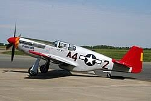

Mustang

El North American P-51 Mustang fue un caza y caza de escolta monomotor estadounidense de largo alcance, utilizado por las Fuerzas Aéreas del Ejército de los Estados Unidos (USAAF) durante la Segunda Guerra Mundial y la Guerra de Corea, entre otros conflictos. El Mustang fue diseñado en 1940 por North American Aviation (NAA) en respuesta a un requerimiento de la Comisión de Adquisiciones del Reino Unido.
omisión de Adquisiciones se acercó a North American Aviation para construir cazas Curtiss P-40 bajo licencia para la Real Fuerza Aérea (RAF). En lugar de construir un diseño antiguo de otra compañía, North American Aviation propuso el diseño y la producción de un caza más moderno
El prototipo NA-73X se puso en marcha el 9 de septiembre de 1940, 102 días después de la firma del contrato, y voló por primera vez el 26 de octubre.La versión definitiva, el P-51D, estaba impulsada por el Packard V-1650-7, una versión del motor Rolls-Royce Merlin 66 sobrealimentado de dos velocidades y armado con seis ametralladoras Browning M2/AN de calibre .50 (12,7 mm).
Desde finales de 1943, P-51B y C (complementados con P-51D desde mediados de 1944) fueron utilizados por las USAAF para escoltar a los bombarderos en incursiones sobre Alemania, mientras que en la Segunda Fuerza Aérea Táctica de la RAF y en la Novena Fuerza Aérea de las USAAF fueron usados como cazabombarderos, papeles en los que el Mustang ayudó a asegurar la superioridad aérea aliada en 1944.
El P-51 también fue utilizado por las fuerzas aéreas aliadas en los teatros del norte de África, Mediterráneo, Italia y el Pacífico. Durante la Segunda Guerra Mundial, los pilotos de Mustang afirmaron haber destruido 4950 aviones enemigos. Entre los aviones aliados, el total de victorias de Mustang en la Segunda Guerra Mundial fue el segundo, detrás del Grumman F6F Hellcat